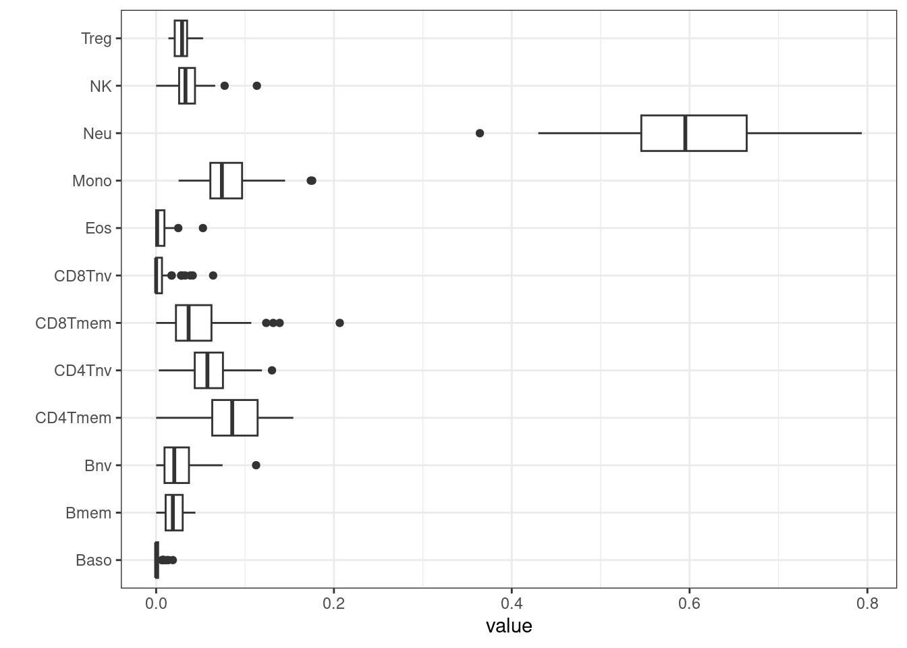

It can be useful to predict phenotypes in your data, either for comparison to assumed categories or to help impute missing values.
It is important to carry out predictions prior to probe masking, as many probes masked for analysis (e.g. those on sex chromosomes) are still useful for predicting phenotypes. Additionally, if you have missing values packages such as MethyLImp220 can be used to impute them. We advise imputing missing values before phenotype prediction, since many predictors use only a subset of available probes and missing data can seriously impact accuracy.
Of note, EPICv2 CpGs have technical suffixes for CpG names, which
predictors may not be updated for. Additionally, CpGs have up to 10
replicates. We advise selecting one of these at random to use in
prediction, or selecting the one with the best performing detection
p-value, which can be inspected using detectionP() from
minfi.
The EPIDish package can be used to predict blood cell
types. It is a R package that infers the proportions of a priori known
cell-types present in a sample representing a mixture of such
cell-types. Right now, the package can be used on DNAm data of
blood-tissue of any age, from birth to old-age, generic epithelial
tissue and breast tissue. The package also provides a function that
allows the identification of differentially methylated cell-types and
their directionality of change in Epigenome-Wide Association
Studies.
After proportions of cell types have been estimated, they can be plotted and inspected.
BloodFrac.m_long <- pivot_longer(as.data.frame(BloodFrac.m), cols = colnames(BloodFrac.m))
BloodFrac.m_long %>%
ggplot(aes(y=name, x=value)) +
geom_boxplot() +
theme_bw() + ylab('')
Cell counts can be added to targets for use later when
building EWAS models.
##
## TRUE
## 57Sex can also be predicted from CpGs on the X-chromosome. These can be subset using the annotations described earlier.
## Rows: 865918 Columns: 57
## ── Column specification ───────────────────────────────────────────────────────────────────────────────────────────────────────────────────
## Delimiter: "\t"
## chr (21): CpG_chrm, probe_strand, probeID, channel, designType, nextBase, nextBaseRef, probeType, orientation, ProbeSeq_A, ProbeSeq_B, ...
## dbl (24): CpG_beg, CpG_end, address_A, address_B, probeCpGcnt, context35, probeBeg, probeEnd, beg_A, flag_A, mapQ_A, NM_A, beg_B, flag_...
## lgl (12): posMatch, MASK_mapping, MASK_typeINextBaseSwitch, MASK_rmsk15, MASK_sub40_copy, MASK_sub35_copy, MASK_sub30_copy, MASK_sub25_...
##
## ℹ Use `spec()` to retrieve the full column specification for this data.
## ℹ Specify the column types or set `show_col_types = FALSE` to quiet this message.anno <- anno %>%
dplyr::select(
cpg = probeID,
chr = CpG_chrm,
start = CpG_beg,
end = CpG_end,
strand = probe_strand,
gene_HGNC,
MASK_general,
probeType
) %>%
mutate(
chr = substr(chr,4,5)
)
chrX <- (anno %>% filter(chr == "X" & probeType == "cg"))$cpg
head(chrX)## [1] "cg17641041" "cg11917035" "cg01855098" "cg07761179" "cg25296477" "cg01003813"The number of CpGs used in the prediction can be shown in a table, and subset from the beta values.
##
## FALSE TRUE
## 847841 18995Then a measure can be calculated, determining the sex of each sample and tabulated against recorded sex.
nopoX <- colSums(betaX >= 0.2 & betaX <= 0.6, na.rm=T)
nopoX <- ifelse(nopoX <= 8000, "Male", "Female")
table(nopoX, targets$sex)##
## nopoX Female Male
## Female 33 0
## Male 0 24As you can see, this is complete data, but the predicted and assumed sexes are identical. This means that we can feel increased confidence that no incorrect labelling or mix-ups are present.